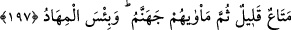
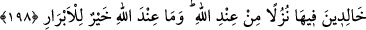

sebebi görülmüştür. Çünkü bu gezip dolaşma muhatabın aldanmasına sebeptir. Böylece
âyetin mânası şöyle olur. Nefsini onların içinde bulundukları “rızık bolluğu ve dünyevî
lezzetlere erme” gibi durumlara imrendirip gözlerini bunlara dikme! Yeryüzünü dolaşıp
çeşitli memleketlerde ticâret yapıp kâr etmelerini ve mahallî bir reis gibi muamele
görmeleri şeklindeki zâhiri birtakım hallerine aldanma!
Rivâyet edilir ki: Bazı mü’minler, müşriklerin refah ve konfor içinde yaşadıklarını
görüp: “Allah’ın düşmanları bizim hayır olarak gördüğümüz bir hayat sürerken, bizler
açlıktan ve çalışmaktan helâk oluyoruz.” diyorlardı. Mü’minlerin bu sözü üzerine
mezkûr âyet-i celîle inmiştir.
197. Azıcık bir menfaattır o. Sonra onların varacakları yer cehennemdir. O ne
kötü varış yeridir.
“Bu” memleket memleket gezip dolaşma, Allah Teâlâ’nın mü’minlere hazırladığı
nîmetler yanında zikretmeye bile değmeyecek kadar “az bir istifadedir.” Hz.
Peygamber (s.a.) şöyle buyurur: “Âhirete nazaran dünyanın durumu, herhangi
birinizin bir parmağıyla denizden alabileceği su kadardır. Bakın bakalım ne kadar su
alabileceksiniz.” Öyle ise, dünyayı elde etmek onu elde edenlere hiçbir fayda
sağlamayacağı gibi, dünyayı kazanmamak da kazanamayanlara bir zarar vermez.
“Sonra varacakları yer” kendisinden ayrılmaları imkânsız bir şekilde sığınacakları
âkıbetleri, azabı tavsîf edilemeyecek olan “cehennemdir.” Yani bu gezip dolaşmaları
son derece az bir istifade olmasına rağmen, bunların ebediyyen cehennemde kalmalarına
sebep olacaktır. Böylesine az bir nîmet, çok büyük bir zarara sebep oluyorsa, ona artık
nîmet denemez.
“Ne kötü bir yataktır orası!” Cehennem, kendileri için hazırladıkları ne kötü bir
yataktır!
198. Fakat Rablerine karşı gelmekten sakınanlar için, Allah tarafından bir ikrâm
olarak, altlarından ırmaklar akan, ebedî olarak kalacakları cennetler vardır. İyi
(sâlih) kişiler için Allah katındaki (nîmetler) daha hayırlıdır.
“Fakat, Rablerinden korkanlar için” yani O’ndan korkarak emir ve yasaklarına karşı
gelmekten sakınanlar için, “altlarından ırmaklar akan cennetler var. Orada sürekli